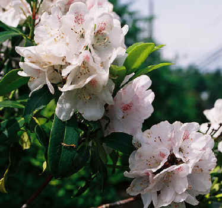
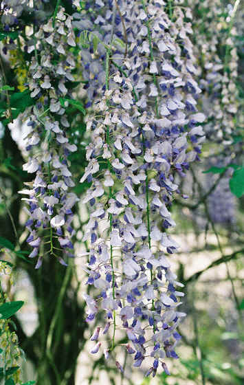
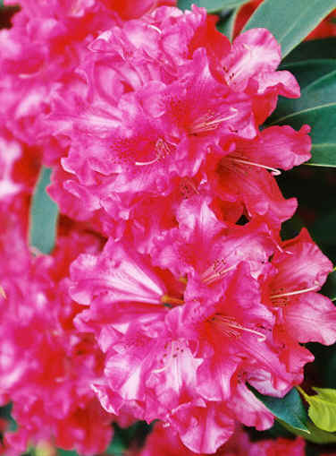

Viaggio
Spring in the Neighborhood
|
|
Viaggio |
Buttercup poppies in a "natural" yard, West Seattle - Saturday, May 14
|
 Rhododendron at the front of our house |
There are many ways that West Seattle is a funky place. I find
great delight in the yard plantings and abundance of wild
flowers that are created and tended in splendid variety.
In the sunny days of mid-May, neighbors work in their yards and make little upgrades in the lawns and plantings. Many yards have been landscaped with a natural cover, because lawns do not do well here and keeping them watered in the summer (lest the grass go dormant) is costly. |
|
 |
In the house we rent, there is a palm tree and other peculiar
vegetation, including herbs and mint.
These dangling beauties descends from vines that penetrate all of the adjacent trees and shubs |
|
 Unnaturally-vivid rhododendron at the front of our house |
I don't know what the true color is, and I am reluctant to fool with
it for fear of losing the amazing brilliance that showed up here.
Although this is also at the front of our home, a walk of the neighborhood brings out much greater variety, in different styles of presentation and horticulture. |
|
|
You are navigating Orcmid's Lair |
created 2004-05-17-09:26 -0700 (pdt) by orcmid |